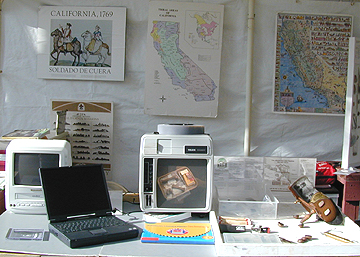

The "Open House" provides a
public forum for learning more about the projects and initiatives of the
CSUMB Institue of Archaeology. This Open House display is but one
of the many aspects of the multifaceted public program sponsored by the
Institute. Photo copyright Ruben G. Mendoza, 2000.
Spring
1999 Fall
1999 Spring 2000 Fall 2000
Spring 2001
Open House Schedule
The Institute of Archaeology
Open House is sponsored on a once a semester basis and is coordinated by
the faculty and students of the Institute of Archaeology and the Social
and Behavioral Sciences Center of CSU Monterey Bay. In addition to
displays, slide shows, and tours of the Old Mission by Professor Ruben
Mendoza, each semester's cohort of archaeology students are provided an
opportunity to discuss their findings and orient the public to the project
at Old Mission San Juan Bautista. Watch this section of the Institute
website for dates related to upcoming Open House events.